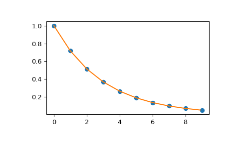

scipy.interpolate.interp1d¶
-
class
scipy.interpolate.interp1d(x, y, kind='linear', axis=-1, copy=True, bounds_error=None, fill_value=nan, assume_sorted=False)[source]¶ Interpolate a 1-D function.
x and y are arrays of values used to approximate some function f:
y = f(x). This class returns a function whose call method uses interpolation to find the value of new points.Note that calling
interp1dwith NaNs present in input values results in undefined behaviour.- Parameters
- x(N,) array_like
A 1-D array of real values.
- y(…,N,…) array_like
A N-D array of real values. The length of y along the interpolation axis must be equal to the length of x.
- kindstr or int, optional
Specifies the kind of interpolation as a string (‘linear’, ‘nearest’, ‘zero’, ‘slinear’, ‘quadratic’, ‘cubic’, ‘previous’, ‘next’, where ‘zero’, ‘slinear’, ‘quadratic’ and ‘cubic’ refer to a spline interpolation of zeroth, first, second or third order; ‘previous’ and ‘next’ simply return the previous or next value of the point) or as an integer specifying the order of the spline interpolator to use. Default is ‘linear’.
- axisint, optional
Specifies the axis of y along which to interpolate. Interpolation defaults to the last axis of y.
- copybool, optional
If True, the class makes internal copies of x and y. If False, references to x and y are used. The default is to copy.
- bounds_errorbool, optional
If True, a ValueError is raised any time interpolation is attempted on a value outside of the range of x (where extrapolation is necessary). If False, out of bounds values are assigned
fill_value. By default, an error is raised unlessfill_value="extrapolate".- fill_valuearray-like or (array-like, array_like) or “extrapolate”, optional
if a ndarray (or float), this value will be used to fill in for requested points outside of the data range. If not provided, then the default is NaN. The array-like must broadcast properly to the dimensions of the non-interpolation axes.
If a two-element tuple, then the first element is used as a fill value for
x_new < x[0]and the second element is used forx_new > x[-1]. Anything that is not a 2-element tuple (e.g., list or ndarray, regardless of shape) is taken to be a single array-like argument meant to be used for both bounds asbelow, above = fill_value, fill_value.New in version 0.17.0.
If “extrapolate”, then points outside the data range will be extrapolated.
New in version 0.17.0.
- assume_sortedbool, optional
If False, values of x can be in any order and they are sorted first. If True, x has to be an array of monotonically increasing values.
See also
splrep,splevSpline interpolation/smoothing based on FITPACK.
UnivariateSplineAn object-oriented wrapper of the FITPACK routines.
interp2d2-D interpolation
Examples
>>> import matplotlib.pyplot as plt >>> from scipy import interpolate >>> x = np.arange(0, 10) >>> y = np.exp(-x/3.0) >>> f = interpolate.interp1d(x, y)
>>> xnew = np.arange(0, 9, 0.1) >>> ynew = f(xnew) # use interpolation function returned by `interp1d` >>> plt.plot(x, y, 'o', xnew, ynew, '-') >>> plt.show()
- Attributes
fill_valueThe fill value.
Methods
__call__(x)Evaluate the interpolant